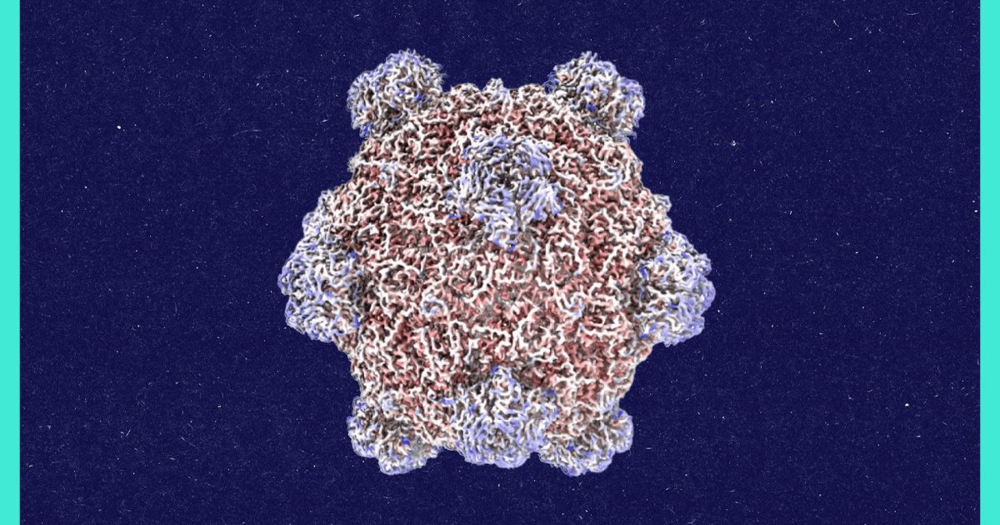

Круглые столы: разговор с создателем вирусов с искусственным интеллектом
Пятница, 16 октября 2026 Может ли ИИ создавать новые формы жизни?
В 2025 году аспирант Стэнфордского университета Сэмюэль Кинг придумал предварительный ответ, когда он использовал генеративную модель ИИ, чтобы предложить генетические чертежи микроскопических вирусов.
Это еще не пример жизни, созданной ИИ, но это может быть следующим.
Присоединяйтесь к старшему ИИ-репортеру...